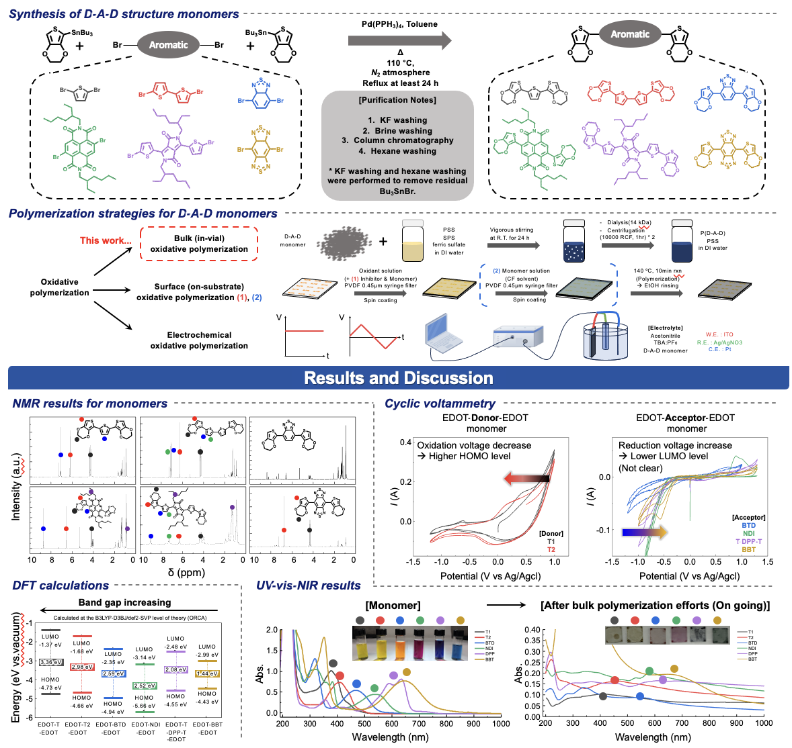

ResearchMy research sits where two questions meet: how the chemical structure of a conjugated polymer sets its electronic properties, and how the electrolyte around it controls the way it behaves in a device. Organic mixed ionic–electronic conductors (OMIECs) carry both ions and electrons, and in organic electrochemical transistors (OECTs), the exchange of ions between the electrolyte and the polymer channel decides when the device turns on and off. I approach these materials from two sides. On the materials side, I build conjugated polymers from the monomer up, using acceptor engineering to set their energy levels before polymerization. On the device side, I design the electrolyte, tuning the ionicity of ionic liquids to control the doping level of the channel and thus the voltage at which a transistor switches. Together, these two approaches let me connect molecular design to how a device actually works. Tuning the energy levels of conjugated polymers at the monomer stage This project began with a wish I often had during my device work: to tune the properties of the material itself, starting from its chemical structure. I focused on the energy levels of conjugated polymers, which decide how readily they gain or lose electrons and therefore how they behave in a device. To set these levels at the monomer stage, I designed a series of donor–acceptor–donor (D-A-D) monomers with EDOT at both ends and changed only the central acceptor, from thiophene and bithiophene references with essentially zero accepting strength to BT, NDI, DPP, and BBT. I built the monomers by Stille coupling, and removing the tin by-products turned out to be the hardest step, which I solved only by combining several purification methods, including KF washing and column chromatography. Because the α-positions of EDOT are readily oxidized, each monomer can then be polymerized by the same oxidative chemistry used to make PEDOT, carrying the chosen acceptor directly into the polymer backbone. I first screened the series by PSS-templated polymerization in water and then moved to surface oxidative polymerization with iron(III) tosylate, adding a base to temper the oxidant's reactivity so that uniform films could form during spin-coating. Combining UV-Vis-NIR spectroscopy, cyclic voltammetry, and TD-DFT calculations (ORCA), I confirmed that the choice of acceptor systematically tunes the energy levels of the monomers, and I am now extending this analysis to their polymers. Tuning OECT switching through the molecular design of the electrolyteEnhancement-mode operation. PEDOT:PSS is heavily doped as cast, so turning an OECT off at zero gate bias requires the electrolyte to do more than carry ions. I studied why the protic ionic liquid [DBUH][OAc] allows a solid-electrolyte PEDOT:PSS transistor to operate in enhancement mode while the common [EMIM][TFSI] does not. XPS, DFT, and capacitance–voltage measurements showed that [DBUH][OAc] interacts preferentially with the ion-conduction pathway of PEDOT:PSS, giving the channel the accumulation and depletion profile of an organic semiconductor rather than a degenerate conductor. Tuning by chemistry alone. In a DBU-based acid–base ionic liquid (ABIL), the extent of proton transfer, and therefore how much neutral base remains, depends on the pKa of the acid. I synthesized a series of ABILs from DBU and carboxylic acids of different pKa and quantified their ionicity by ¹H NMR and DFT. Changing only the anion shifted the threshold voltage of PEDOT:PSS OECTs by up to 500 mV. Mechanism. Because a Raman shift alone could not prove de-doping, I combined UV-Vis-NIR, Raman, XPS, GIWAXS, cyclic voltammetry, and EIS-based capacitance–voltage analysis. Together they supported a single causal chain: neutral DBU reduces PEDOT through single-electron transfer, lowering the hole density and shifting the threshold voltage. Circuits. I used this tunability to build zero-VGS-load OECT inverters whose switching threshold follows the ABIL composition. Other projectsIon storage layers for electrochromic displays — collaboration with Prof. Inho Song's group on the morphology and crystallinity of transparent capacitive ion storage layers (ACS Appl. Mater. Interfaces, accepted). Long-term memory organic transistors — bilayer electrolyte/ferroelectric-polymer gate dielectrics that retain synaptic states for more than 24 hours. Although P–E hysteresis first pointed to ferroelectric polarization, control experiments without the ferroelectric polymer traced the memory to the high ionic resistance of a low-ion-concentration electrolyte. Methods
|